Description:
Return a table sequence/cursor consisting of the specified fields according to the correspondence between the composite table’s key (/dimension) and the corresponding field in the table sequence/cursor.
Syntax:
T.new(A/cs:K…,x:C,…;wi)
Note:
Composite table T is the primary table ; table sequence/cursor A/cs is the subtable. They have a one-to-many relationship. The function matches T’s key (/dimension) field with the corresponding fields of A/cs (begin the correspondence from the first field) and returns a table sequence/cursor made up of x:C fields. A/cs is ordered by the first key field, which should have same order as T’s key (/dimension).
With a table sequence parameter, the function returns a table sequence, and with a cursor parameter, it returns a cursor or a multicursor. Align the returned result set to T and set key/dimension for it; support aggregations on fields of the subtable.
Parameter:
|
T |
A composite table. |
|
A/cs |
A table sequence/cursor. |
|
K |
Name of the A/cs’s field that corresponds to T’s key (/dimension) Field of A/cs; when it is specified, use it to match with T’s key (/dimension); when it is absent, use the first field of A/cs to perform the matching; when there are multiple Ks, use colon (:) to separate them. |
|
x |
Field expression or aggregate function count/sum/max/min/avg. |
|
C |
Column alias; can be absent. |
|
wi |
Filtering condition on T; retrieve the whole set when this parameter is absent; separate multiple conditions by comma(s) and their relationships are AND; besides regular filtering expressions, you can also use the following five types of syntax in a filtering condition, where K is a non-key field in entity table T: 1．K=w w usually uses expression Ti.find(K) or Ti.pfind(K), where Ti is a table sequence. When value of w is null or false, the corresponding record in the entity table will be filtered away; when w is expression Ti.find(K) and the to-be-selected fields C,... contain K, Ti’s referencing field will be assigned to K; when w is expression Ti.pfind(K) and the to-be-selected fields C,... contain K, sequence numbers of K values in Ti will be assigned to K. 2．(K1=w1,…Ki=wi,w) Ki=wi is an assignment expression. Generally, parameter wi can use expression Ti.find(Ki) or Ti.pfind(K), where Ti is a table sequence; when wi is expression Ti.find(Ki) and the to-be-selected fields C,... contain Ki, Ti’s referencing field will be assigned to Ki correspondingly; when wi is expression Ti.pfind(Ki) and the to-be-selected fields C,... contain Ki, sequence numbers of Ki values in Ti will be assigned to Ki. w is a filter expression; you can reference Ki in w. 3．K:Ti Ti is a table sequence. Compare Ki value in the entity table with key values of Ti and discard records whose Ki value does not match; when the to-be-selected fields C,... contain K, Ti’s referencing field will be assigned to K. 4．K:Ti:null Filter away all records that satisfy K:Ti. |
Option:
|
@r |
Copy records of the primary table and return result set aligned by A/cs. |
Return value:
Table sequence/Cursor
Example:
|
|
A |
|
|
1 |
=connect("demo").cursor("select STATEID,CAPITAL from STATECAPITAL") |
Return a cursor. |
|
2 |
=file("spec-new.ctx") |
|
|
3 |
=A2.create@y(#STATEID,CAPITAL) |
Create a composite table and set STATEID as the key. |
|
4 |
=A3.append@i(A1) |
Append data in cursor A1 to the composite table; below is content of the result table: 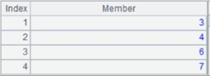 |
|
5 |
=demo.query("select STATEID,CID,NAME,POPULATION from CITIES").sort(STATEID) |
Return a table sequence: 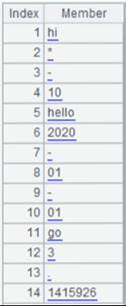 |
|
6 |
=A4.new(A5:STATEID,CAPITAL,sum(POPULATION):STA_POP) |
A4 is the primary table and A5 is the subtable; perform the matching between the composite table’s key STATEID and the table sequence’s STATEID field and return a table sequence consisting of CAPITAL field and STA_POP field whose contents are results of performing an aggregate operation on the subtable’s POPULATION field: 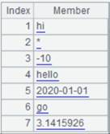 |
|
7 |
=A4.new(A5,CAPITAL,sum(POPULATION):STA_POP) |
As parameter K is absent, perform matching between the composite table’s key and the table sequence’s first field – STATEID and return same result as A6. |
|
8 |
=A4.new@r(A5:STATEID,CAPITAL,NAME,POPULATION) |
Use @r option to copy the primary table records and return a result set aligned to the subtable: 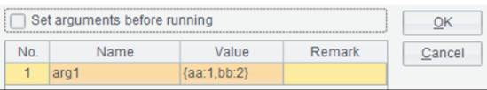 |
|
9 |
=A4.new@r(A5:STATEID,STATEID,CAPITAL,NAME,POPULATION;STATEID<3,left(CAPITAL,1)=="M") |
Filter A4’s data according to filter condition – STATEID<3 and the first letter of CAPTIAL value is M – during the association: 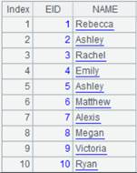 |
When there are multiple K parameters:
Use special types of filtering conditions:
|
|
A |
|
|
1 |
=demo.cursor("select * from STUDENTS") |
Below is content of the cursor: 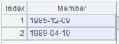 |
|
2 |
=file("students.ctx") |
|
|
3 |
=A2.create@y(#ID,NAME,GENDER,AGE) |
Create a composite table. |
|
4 |
=A3.append@i(A1) |
Append cursor A1’s data to the composite table’s base table. |
|
5 |
=demo.query("select top 12 STUDENTID,SUBJECT,SCORE from SCORES") |
Return a table sequence: 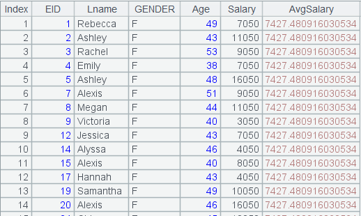 |
|
6 |
=A3.new(A5:STUDENTID,ID,NAME,AGE) |
Match the composite table’s key values to table sequence’s fields and retrieve corresponding composite table fields and return a table sequence: 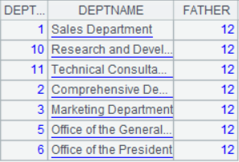 |
|
7 |
=create(NAME,Num).record(["Emily",12,"Lauren",45]).keys(NAME) |
Generate a table sequence using NAME as the key: 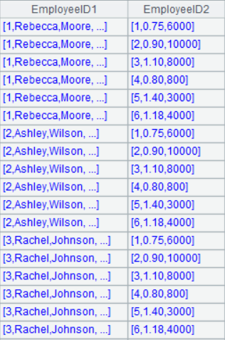 |
|
8 |
=A3.new(A5:STUDENTID,ID,NAME,AGE;NAME=A7.find(NAME)) |
Use K=w filtering mode; in this case w is Ti.find(K) and entity table records making NAME=A7.find(NAME) get null or false are discarded; NAME is the selected field, to which table sequence A7’s referencing field is assigned. 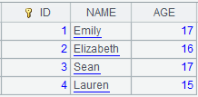 |
|
9 |
=A3.new(A5:STUDENTID,ID,NAME;NAME=A7.pfind(NAME)) |
Use K=w filtering mode; in this case w is Ti.pfind(K) and entity table records making NAME=A7.find(NAME) get null or false are discarded; NAME is the selected field, to which its sequence numbers in table sequence A7 are assigned.
|
|
10 |
=A3.new(A5:STUDENTID,ID,NAME;NAME:A7) |
Use K:Ti filtering mode; compare the entity table’s NAME values with the table sequence’s key values and discard entity table records that cannot match.
|
|
11 |
=A3.new(A5:STUDENTID,ID,GENDER;NAME:A7) |
This is a case where K isn’t selected; NAME isn’t the selected field, so only filtering is performed. 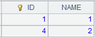 |
|
12 |
=A3.new(A5:STUDENTID,ID,NAME;NAME:A7:null) |
Use K:Ti:null filtering mode; compare the entity table’s NAME values with the table sequence’s key values and discard entity table records that can match.
|
|
13 |
=create(Age,Chinese_zodiac_sign).record([14,"tiger",15,"ox",16,"rat"]).keys(Age) |
Return a table sequence using AGE as the key. 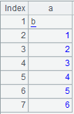 |
|
14 |
=A3.new(A5:STUDENTID,ID,NAME,AGE;(AGE=A13.find(AGE),NAME=A7.find(NAME),AGE!=null&&NAME!=null)) |
Use (K1=w1,…Ki=wi,w) filtering mode; return records that meet all conditions.
|